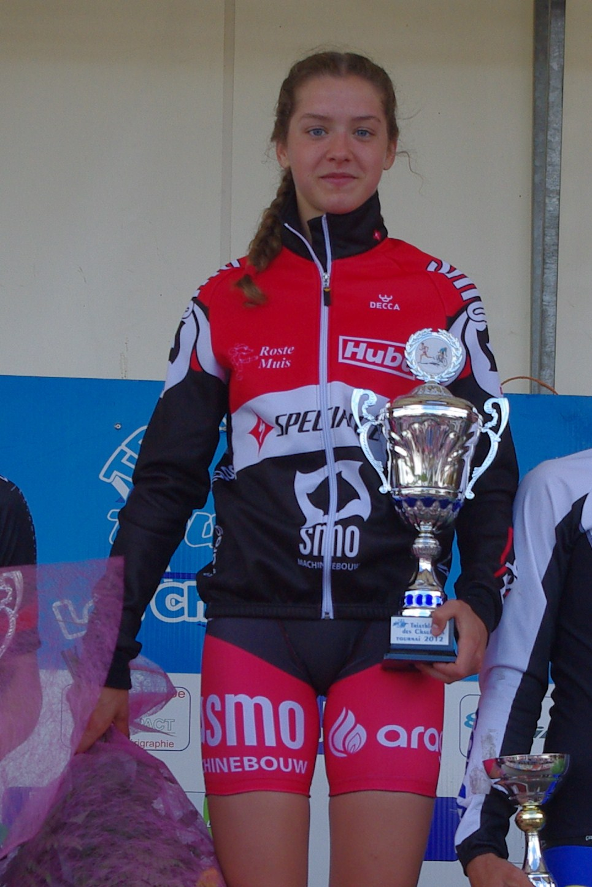

SMO-Specialized atlete Ine Couckuyt is ongetwijfeld de primus van de voorbije weken. Na een knappe elfde plaats op het EK juniores in Israël, wist de
17-jarige topsportatlete ook het voorbije weekend de zegebloemen te pakken in Doornik. Ook in de ploegenwedstrijd was ze één van de sterkhouders binnen de Belgische kampioenenploeg.
Er was voorafgaand aan het BK weekend heel wat om te doen, zou het nu wel of niet zwemmen worden. Hoewel het even leek of het dilemma opgelost zou worden door 500 meter te zwemmen in plaats van 750. Volgens de officiële meting gedaan door de hoofdscheidsrechter bedroeg de officiële watertemperatuur 11,9°C. Voor de veiligheid van de deelnemers werd vervolgens beslist om het zwemmen te annuleren en de wedstrijd om te vormen tot een duatlon (zoals bepaald in het reglement). Een aantal clubs brachten in laatste instantie dan ook nog enkele topduatleten aan de start, dus een topdeelnemersveld gegarandeerd met ruim 200 atleten aan de startlijn. De Westvlaamse triatlete liet het niet aan haar hart komen en pakte de zege na Lieselotte Bossuyt (NLT) en Ilse Geldhof (Atriac). Haar teamgenotes Charlene Ottevaere en Linde Herreman werden in respectievelijk 12e en 14e.
Hieronder kan je het verslag lezen van Ine.
De voorbereiding
Doordat dit jaar de Olympische Spelen plaatsvinden, viel het EK redelijk vroeg in het seizoen. De volledige winterplanning moest dus wat worden bijgeschaafd in vergelijking met vorig jaar (waar het EK pas in juni plaatsvond) en moest voor een eerste vroeg piekmoment zorgen op vrijdag 20 april. Door mijn gevoeligheid voor blessures probeerden we niet te overdrijven in loopkilometers wat uiteindelijk ook efficiënt was, want ik liep een volledige voorbereiding blessureloos door. Met 4 stages achter de kiezen, trok ik samen met Charlotte Deldaele en Jelle Geens naar de ETU Junior Cup in Quarteira (POR), onze eerste en enige voorbereidingswedstrijd op het EK. Ik voel me al beter op mijn gemak bij het zeezwemmen, maar kwam nog iets tekort om de aansluiting met de kop te maken. Fietsen en lopen zaten goed tot zeer goed. Ik kon met een gerust gemoed nog drie weken naar het EK toeleven. Dat dacht ik toch… Bij het loslopen na de wedstrijd voelde ik een stekende pijn in mijn rechterheup. Het was een kwaaltje waar ik al langer mee liep en die me nog nooit van een training had weggehouden, maar nu was het erger. Hoewel ik dit jaar het accent wou leggen op het ‘zonder stress naar een wedstrijd toe gaan’, was dit een zeer hoge stressfactor! De laatste twee weken voor het EK werden gekenmerkt door de zéér weinige loopkilometers die ik heb afgelegd. Ze waren echter ook een opeenvolging van kinés en dokters bezoeken. Deze mensen hebben mij allemaal het beste advies proberen te geven om mij klaar te stomen voor de race. Bij deze wil ik dan ook nog eens Robbie, Vincent en Pieter bedanken voor hun tijd en topwerk!! Want tijdens beide races, zowel vrijdag als zondag, heb ik geen last gehad.
De individuele wedstrijd EK junioren
Twee dagen voor de race nog 5x200m en 5x400m gelopen met wat wedstrijdtempo in. Ik had iets van last, maar dat zou vrijdag moeten wijken. De dag van de wedstrijd was de zon redelijk nadrukkelijk aanwezig. Vooraf zoveel mogelijk schaduw proberen op te zoeken en af en toe nog wat drinken. Na kort inzwemmen, werd iedereen 10 minuten voor de start in de line-up zone verwacht. Er was echter nog een voertuig op het parcours waardoor we minstens 15 minuten vertraging hadden (dit was ook het geval bij de dames in de namiddag, qua stiptheid was de organisatie dus niet top). Er zijn dingen die ik liever doe dan een kwartier tussen mijn, al even zenuwachtige, concurrenten te staan wachten, maar bon.. Ik had een laag startnummer waardoor ik helemaal rechts op het beachponton kwam te staan. Met de gedachte ‘zo snel mogelijk in de voeten proberen te zwemmen’ begon ik met een goeie start, niet overdreven veel slaag. Ik kon ook meteen in iemand zijn zog zwemmen waardoor ik er geen slecht oog op had. Achteraf bleek dat we met acht à tien atletes die rechts startten, waren afgezonderd van het grote peloton. Iets voor de boei kwamen we erbij, maar enkel sterke zwemsters als Orazem (SLO) en Agapova (RUS) konden nog enigszins opschuiven. Ik kwam als één van de laatste uit het water op bijna één minuut van de kop. Mijn achtervolging kon beginnen.
De eerste ronde van het fietsen heel diep moeten gaan om aansluiting te vinden met de tweede groep. Had last van een zeer droge mond door de warmte in combinatie met het zoutwater. Verschillende malen water over mijn gezicht gespoten. Na de aansluiting niet veel kopwerk meer gedaan. Het draaide goed in de groep zonder mijn tussenkomst. In de tweede ronde wanneer ik de kopgroep van een twintigtal atleten zag, had ik even een dipje en twijfelde aan mijn kansen op top 16, maar heb dit dan proberen uit mijn hoofd te zetten. Als derde de wissel ingegaan en als eerste eruit gekomen. De Duitse Werner snelde me al redelijk vlug voorbij en ik wist dat die niet te houden was. Dan maar mijn runningmates van in Quarteira, de Spaanse Saizar en Estse Kivioja, gevolgd bij het eerste stuk tegen wind. De Spaanse moest al snel afhaken en ik bleef nog even achter de Estse. In het stuk met wind voelde ik dat ik sneller en kon en ging er alleen vandoor. Ik kwam in de top 16 te lopen en supporters en coaches bleven maar roepen dat ik nog atletes uit de kopgroep kon oppikken. Ik ben gewoon mijn eigen tempo blijven aanhouden en de laatste km versneld. Met een langgerekte sprint probeerde ik nog een Italiaanse erop te leggen, maar ze zag me aankomen en kon zelf ook nog sprinten. Ik strandde op een vijftal seconden van Charlotte en kon daarmee een elfde plaats bemachtigen. Hier had ik vooraf zeker voor getekend. De ontlading achteraf was groot! Met mijn eerste WK-ticket op zak, mag ik tevreden terugblikken op dit EK. En vooral onthouden dat het na een mindere/slechte zwembeurt, nog NIET gedaan is!!
Junior Mixed Team-Relay
Zondag stond dan de team-relay op het programma. De dag voordien had ik redelijk wat stress omdat ik wat druk voelde tov vorig jaar, maar door mijn roommate, Charlotte, was die ’s ochtends volledig verdwenen. De afstanden waren korter als vorig jaar (250m zwemmen – 6km fietsen - 1,2km lopen (+310m lopen naar de wissel)). Charlotte maakte een supersnelle start en kwam als vijfde uit het water. Helaas kwam ze op de (gladdige en bochtige) weg naar de wisselzone ten val. Hierdoor miste ze net de kopgroep en moesten we de hele race achtervolgen. Jammer (zeker als ze na die valpartij iemand daar plaatsen om aan te duiden dat je moet oppassen), maar niets aan te doen. We hebben alle vier een laatste keer alles uit ons lijf gehaald en eindigden, na een pittig sprintje van Jelle, op een 6e plaats. Over mijn eigen wedstrijd(je) was ik ook tevreden. Nu konden we even rusten…
Groetjes Ine